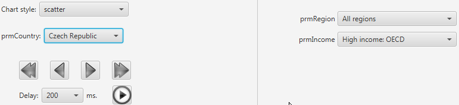
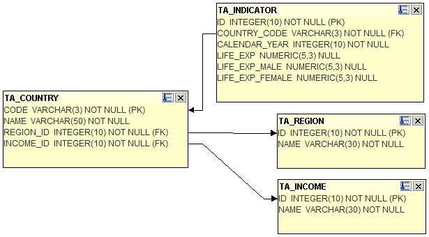
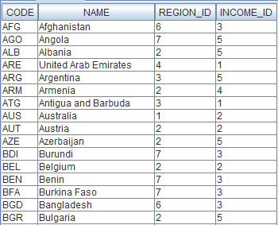
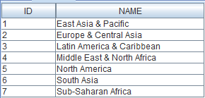
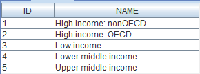
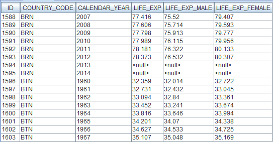
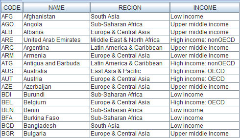
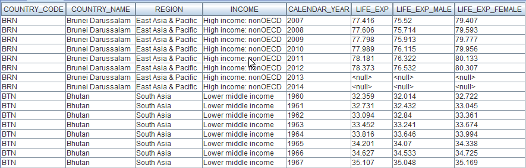

The wb08 project
General info
Project description
Data source
The About view
The Life expectancy at birth view
Changes relative to the wb07 project
Database
General info
This project provides charts of the life expectancy at birth by country.
The desired chart style can be selected from a combobox.
Groups of countries can be created by selecting the desired entries in the prmRegion and prmIncome comboboxes.
Then, the user can select a country from the group by using the prmCountry combobox, as seen below:

It is also possible to manually iterate through the countries by using the arrow buttons or let the program iterate automatically by pressing the button.
The comboboxes prmRegion and prmIncome also contain an option for selecting all values of the associated parameter.
Project description
Data source
The project declares an SQL data source consisting of an embedded Derby database stored in a zip file located in the project's directory.
Because Viewreka sets the value of the system property 'user.dir' to the directory of the current project, this property is used in the connection string to locate the database.
The About View
The About view provides an HTML chart with information about this project. The chart content is retrieved from an external file (and it is the document you are currently reading).
The Life expectancy at birth View
The Life expectancy at birth view provides an XY chart based on the dataset dsLifeExp, which is defined by a parameterized query.
Changes relative to the wb07 project:
- The queries of the dsRegion and dsIncome datasets have been stored in external files.
- The queries of the dsRegion and dsIncome datasets consist now of two columns: name and description.
The name column provides the value of the associated parameter (e.g., %), which is used by the query of dsCountry..
The description column provides the text that will be displayed by the associated combobox (e.g., All regions).
- A list of styles declares the possible chart styles. The previous projects did not declare such a list, therefore they used the default line chart style.
- A CSS file (wb08.css) has been provided, in order to customize the chart look.
(You can use the button to select another stylesheet file. Choose for example wb08-bw.css for a black and white chart.)
Database
This project uses a Derby database compiled from data provided by the World Bank.
The database consists of four tables, as seen in the figure below:

Below is a sample of the data contained in these tables:
TA_COUNTRY

|
TA_REGION

|
TA_INCOME

|
TA_INDICATOR

|
The database also contains two views that present the data in a user friendly form, as illustrated by the samples below:
V_COUNTRY

V_INDICATOR
